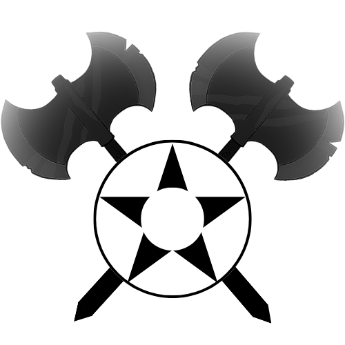
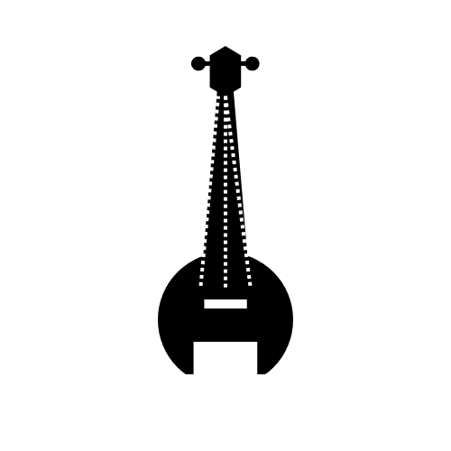
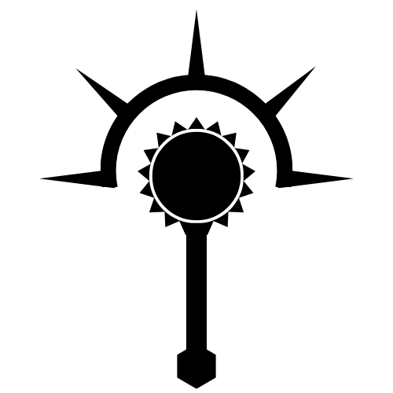
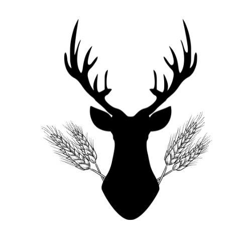
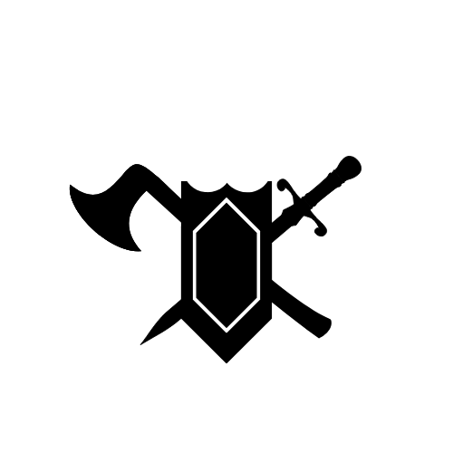
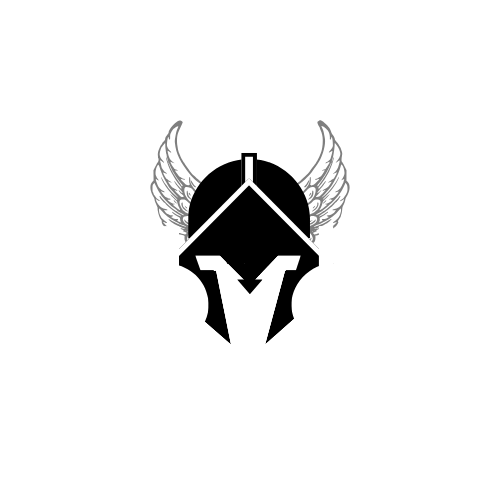
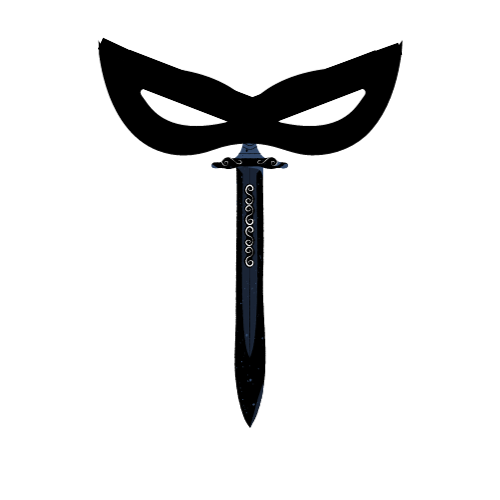
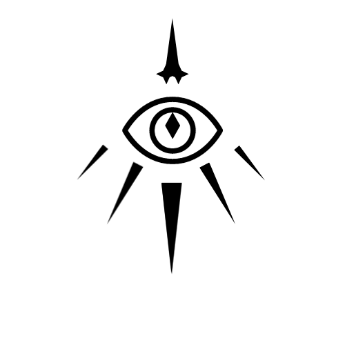

Character Classes
Below is a list of all 12 available base classes in D&D. The images are a symbol for each class representing a little bit of what they key elements are, and underneath is a brief explanation on what the class excels at, and what makes it unique. Most Players end up finding a particular class or character type that they enjoy the most, and hopefully this list can help you figure out what kind of Character you enjoy.

The Barbarian
Barbarians are a melee focused class that relies mainly on their mechanic called Rage. When a Barbarian rages, they take reduced damage, and deal increased damage for the duration, the only catch is that they need to keep attacking or they lose the rage benefits. Barabrians are all about taking and dishing back damage, and they excel at it. Dwarves, Half-Orcs, and Dragonborn make excellent Barbarians, especially Half-Orcs. Do you want your character to be on the front lines in any fight? Then Barbarian is for you!

The Bard
Bards are a jack of all trades, master of none. They can get dirty in a combat, they have spellcasting abilities, and a unique feature called inspiration. Inspiration is a dice that you can grant an ally and they add whatever they roll with that die to the next roll of their choice. With access to damagin spells, healing spells, and utility spells the Bard is an excellent addition to any party. Half-Elves, Elves, and Tieflings are all great choices for a Bard. Do you want to provide unrivaled support to the rest of your team? Then Bard is for you!

The Cleric
Clerics are the holy warriors in D&D. Clerics receive their magic and their class abilties directly from some kind of diety that they worship. With the vast amount of different Deities, there are a vast amount of different Clerics! The main feature of a Cleric is their ability to directly ask their God or Goddess for divine assistance once they have reached 10th level. Almost any Character option is a good fit for a cleric, just make sure to have a good Wisdom score. Do you want to be a holy warrior bringing the ideals of something greater to everyone you meet? Then Cleric is for you!

The Druid
Druids are guardians of the natural order. In fact, Druids gain their spellcasting ability from the very essence of nature itself! What makes druids both unique and cool is their ability to transform themselves into the forms of animals they have interacted with. This ability is called WildShape. However, this comes with limits. Druids cannot wear armor or shields made of metal, and they have a limited time that they can remain as a beast. If their beast form is killed, they simply revert back to their original appearance. Druids cannot talk or cast spells during WildShape. Druids also have access to healing, damaging, and utility spells. Wood Elves, Forest Gnomes, and even Tieflings can all make great Druids. Do you want to keep the natural order in balance and do so by fighting alongside nature? Then Druid is for you!

The Fighter
Fighters are a melee class just like the Barbarian, but they are much more rounded as a class. Fighters focus on mastery of almost all types of weapons and armors, and use those skills to their advantage. Fighters have a few simple main features. The first is called Second Wind, which allows the fighter to heal themself by shrugging off injuries, and the second is Action Surge which allows them to take an additional action on their turn. Fighters also reduce the number needed to roll a critical attack, and make multiple attacks per action. Almost any Character Option could be used as a fighter, although Human is probably the most common pick. Do you want to be an all around good fighter capable of adapting to most situations? Then the Fighter is for you!
The Monk
Monks are a unique kind of melee class. While monks can use weapons, they are limited to only simple kinds of weapons such as staffs, or daggers. The main benefit of playing as a Monk is that you get to make so many attacks. Monks have attained mastery over their own bodies and have a resource called Ki points. There are many many ways to expend Ki points, and just as many things that you can do because of that. The main use is for two actions, the first is called Flurry of Blows, which allows you to make two additional bonus attacks by expending Ki, and the second is called Stunning Strike which can stun enemies it hits leaving them vulnerable. Elves, Half-Elves and even Half-Orcs can all make excellent Monks. Do you want to play as a Character with near complete self mastery and evasiveness during combat? Then the Monk is for you!

The Paladin
Paladins are a half melee half spellcaster class that focuses on martial enhancement and healing. Paladins have a few core features, the first is called Lay on Hands, which allows them to heal those they touch from a health pool based on their level. They also have their main feature called Divine Smite. Divine Smite expends spell slots to deal additional radiant damage on melee attacks. The last feature is various different auras that the Paladin exudes which provide benefits to the allies within range. Almost any character option can be a Paladin, and despite their magic being mainly radiant or celestial, paladins dont get their power from Deities, but rather from their devotion to specific causes. Do you want to wield divine magic to enhance your martial prowess? Then Paladin is for you!
The Ranger
Rangers are dextrous and wise. Typically Rangers are wilderness guides, trackers, or any other profession that deals with the outdoors. Rangers are similar to fighters, but focus more on ranged combat or the use of finesse weapons. Rangers have limited magic available to them, and all of that magic is centered around nature like a druid. Rangers are usually very good at being stealthy and setting up ambushes or even covering tracks while traveling. Each ranger has a specific fighting style that they stick to which provides some uniqueness between other rangers. Wood Elves and Forest Gnomes make the best rangers, but any option will be reliable. If you want to have a specific fighting style focused on navigating the outdoors and protecting its beauty then the Ranger is for you!

The Rogue
Rogues are nimble and dextrous, and rely on being unseen in order to perform sneak attacks on their enemies. Stealth and sleight of Hand are the most important skills for any rogue, and they use these skills expertly. Rogues gain the ability to be extra proficient in certain skills, and can specialize further than any other class. Rogues typically either focus on close combat with daggers, or ranged combat with bows. When a rogue meets certain criteria, they can use their main feature called Sneak Attack which adds multiple d6 to the damage roll. If you like being stealthy, being extra proficient in skills, and rolling lots of d6, then a Rogue is for you!
The Sorcerer
Sorcerers are full spellcasters that get their magical abilities from something called The Weave which is the source of all magic within D&D. Sorcerers gain access to this innate ability from the weave in various different ways which makes each sorcerer entirely unique. Sorcerers have access to many unique spells as well that no other class is entirely able to learn. The main feature of a Sorcerer is the ability they have to augment their spells. They can do this in ways such as increasing the range or increasing the number of targets a spell can hit. Sorcerers are lacking in martial prowess like most full spellcasters are, but make up for it in their utility. If you want to play a full spellcaster with completely unique gameplay, then the Sorcerer is for you!

The Warlock
Warlocks are a spellcasting class with the ability to be quite versatile in their build. Warlocks get their magci from contracts or pacts with otherworldly beings of power. The source of this being is what makes each Warlock different. A Warlock that made a pact with a devil has different abilities than a Warlock who made a pact with some fey being, for example. Warlocks get fewer spells, but have access to unique spells only they can learn. The best example of this is their Eldritch Blast spell, a necessary staple for every Warlock. Warlocks also get a feature called Eldritch Invocations. The invocations are a large list of subfeatures you can choose from to even further customize your Warlock with things like Darkvision, or the ability to change your appearance. There is even a way you can make your Warlock focus on melee fighting using invocations and the Pact you choose. If you're looking for probably the most unique spellcaster with a few limitations on how magic works, and the option for a ton of customization then Warlock is for you!
The Wizard
Wizards are a spellcasting class that get their magic through intense study of the arcane arts. Wizards keep a spellbook and can cast the most versatile amount of spells. Wizards eventually get a feature called signiature spells, which allows them to cast high level spells without the normal expenditure of spell slots. The Wizard can also take magical spell scrolls that they find while adventuring and copy them into their book which allows them to further increase the number of spells they have available. Nearly any Character option can be a Wizard, but Tieflings and High Elves are the most condusive for that class. If you want to have access to nearly any spell in D&D and provide great spell utility for your party then the Wizard is for you!